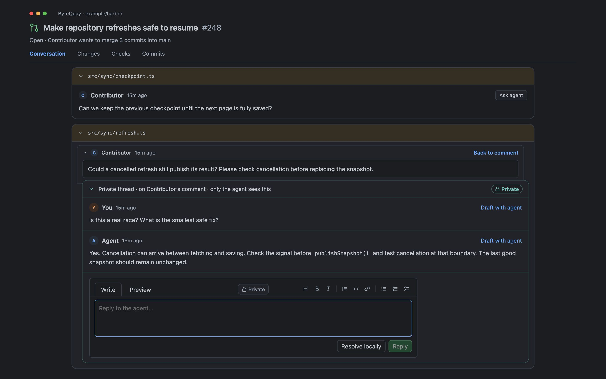
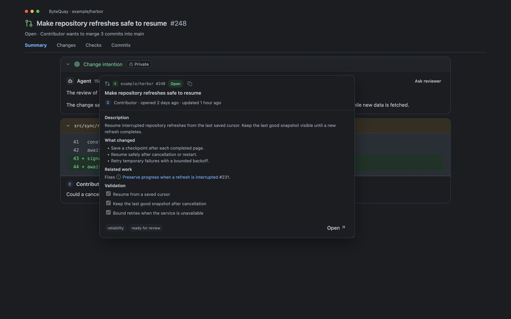
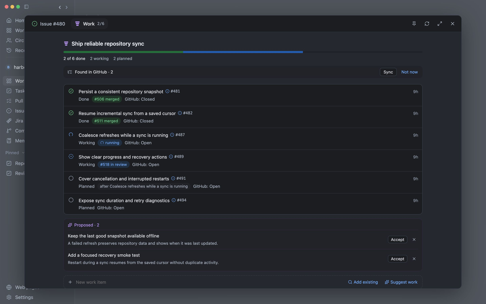

A conversation that builds.
Work with Codex or Claude in a separate local worktree. Steer the task, handle approvals, and inspect the result beside the conversation.
Development guide →YOUR REPOSITORIES. YOUR AGENTS. YOUR CALL.
As your agents do more, your confidence should grow. ByteQuay keeps context, decisions, and conversations connected, so you can understand every change as deeply as you need.
Built for macOS Open source Pre-1.0
Give an agent a task, follow the conversation, and inspect changes in WorkBench. Open Tears of time to explore code and run tests.
Read the feature guide →FROM CONTEXT TO CONFIDENCE
Let agents build while you explore the intent, assumptions, code, and tests together. Discuss any part of the work, choose how deep to go, and merge when you’re confident.
Work with Codex or Claude in a separate local worktree. Steer the task, handle approvals, and inspect the result beside the conversation.
Development guide →Understand the intent, follow each commit, and investigate private findings before choosing what to publish.
Review guide →Choose the source and destination, review a commit range, and follow conflict resolution before delivering the branch.
Cherry-pick guide →Press ⌘J to ask about your day, see what needs you, and handle waiting tasks. Enable task actions when you want the Assistant to start work or pass along your replies.
Assistant guide →Bring related work into one view. Follow planned items, active attempts, dependencies, and completed outcomes.
Epics guide →ASK AGENT · RIGHT FROM THE REVIEW CARD
Turn a review comment into a private conversation with your agent. Check the reasoning, explore a fix, and understand the tradeoffs with the code in context.
When you’re ready, draft a reply together. You choose what gets posted to GitHub.
Explore private review discussions →
PR & ISSUE PREVIEWS · ACROSS YOUR WORKSPACE
Hover over a pull request or issue link to see its title, status, description, and labels. Get the context behind a reference while staying with the conversation or review.
Need a closer look? Move or resize the card to keep it open, or open the full PR or issue.
Explore link previews →
MAKE PROGRESS VISIBLE
Epics keep the work behind a larger change together. See what is done, what is moving, and what is waiting for something else.

GET TO KNOW BYTEQUAY
ON YOUR MAC
ByteQuay stores all app data locally on your Mac, including conversations, reviews, settings, and working copies. GitHub and model requests use the external services you connect.
OPEN SOURCE. STILL TAKING SHAPE.
ByteQuay is under active development. Try a release, build from source, or help shape what comes next.